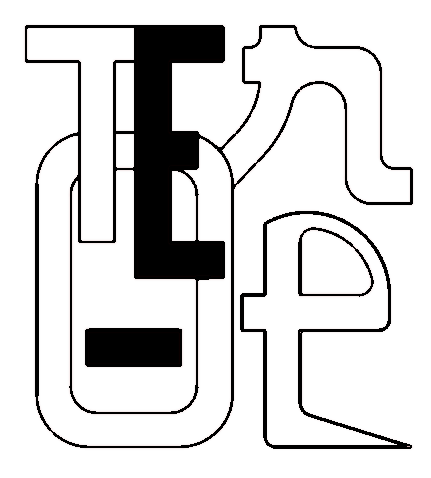

E-Toneコロナ期に葛藤していた思いを描きました。 有名人の似顔絵と、マインドマップを組み合わせて、自由に表現した作品です。
今もよく描いているのが、「4コマ家族会議」という、我が家のドタバタを表現したものです。 noteで週３回くらいの頻度で描いています。 → note.com/tetsuyama4ki
年賀用のイラスト、野球キャラクターのアニメーションなど。 依頼を受けて、そろばん塾の看板や、地域のマスコットキャラクターおよびポスターを手がけています。
思いつくままに描いた落書きと、思いつくままコメントを入れたりしたものです。 その時思った感情を、表現することが楽しいです。
お仕事のご依頼・ご相談はこちらからどうぞ。
送信しました
内容を確認の上、折り返しご連絡いたします。